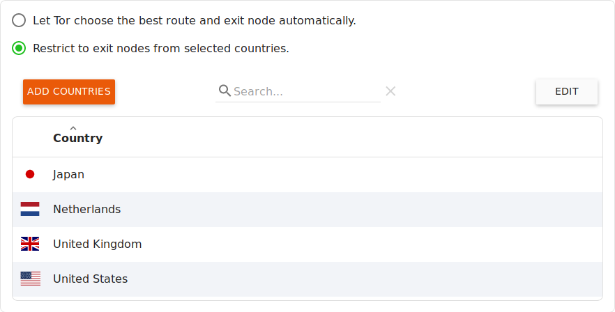
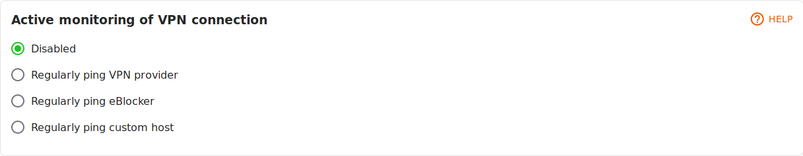

Deutsch | English
eBlocker Base ✓ / eBlocker Pro ✓ / eBlocker Family ✓
This page is further divided into the following sections:
Prologue:
The Tor network is a non-commercial network of people around the world who provide free network infrastructure so users can anonymize their IP address while surfing the Internet.
However, the Tor network does not guarantee availability or minimum bandwidth. Unfortunately, this is beyond the control of the eBlocker. We can only provide very easy access to Tor through eBlocker.
In fact, Tor's data rate is often not sufficient for streaming audio or video data.
Tor's anonymization feature doesn't provide additional protection when you use a service you need to sign in to (such as online shopping, reading web mail, etc.): the provider knows who you are anyway. If you are using a Tor network connection, they may even think that your account is being compromised and, at worst, block it.
It is primarily important that you are not watched unnoticed by third parties while surfing - even when purchasing or reading web mails. This is exactly what the eBlocker protects you from by blocking all data collectors and data collecting advertising networks.
Our tip:
Activate Tor only if you want to access sensitive content and make sure you can't be identified by your IP address. For example, you can turn on Tor when you're researching a health problem to make sure the health portal can never identify you and connect you to the disease you're researching.
There are two options for the Tor network.

Let Tor choose the best route and exit node automatically.
The eBlocker automatically selects the best route and goal exit nodes.
Restrict to exit nodes from selected countries.
However, if you wish to limit the Tor Exit Nodes to specific countries, you can select the Tor Exit Node by country or a list of countries.

If you click on the Add Countries button, you can add Tor Exit Nodes to the list.
Click on the Edit button to delete individual Tor Exit Node. Select the desired Tor Exit Nodes and click the Delete Country button.
Tip:
From the list of specified Tor Exit Nodes, the eBlocker always randomly selects a Tor Exit node. If you want to exit the Tor-Network from only one specific country, use only one Tor Exit Node, instead of a list of Tor Exit Nodes.
Note:
The list of Tor Exit Nodes is available for all devices in your network and cannot be set individually for each device.
You can either enable/disable the Tor network connection for each device using the eBlocker settings in the Devices menu, or enable/disable the Tor network connection for each device using the Dashboard.
A practical example of how to use the Tor Network feature can be found here.
Instead of using the Tor Network, you can also use a VPN connection from any VPN provider.
Attention:
You may incur additional costs if you use the services of VPN providers. The connection speed may depend on the VPN provider.

Click on the Edit button to delete a VPN profile from the list of VPN profiles. Select the desired VPN profile and click the Delete Profile button.
To create a new VPN network connection (profile), click the New VPN Provider button. A wizard for new VPN connections opens, where you have to upload the OpenVPN configuration file(s) of your VPN provider and, if necessary, enter your user name and password for the VPN provider.

Finally assign a name to this new VPN profile and, if necessary, a short description. In the wizard you can specify whether this VPN profile is available in the eBlocker Dashboard and in the eBlocker Controlbar, whether the DNS Server of the VPN provider should be used and whether this connection should be actively monitored by the eBlocker. If you now click on the Save button, this new VPN profile will be added to the list of existing VPN profiles.
Click on a VPN profile to edit it.

Here you see the details of the VPN profile and can edit the individual items name, description, user name and password by clicking on the pen.

Some VPN provider terminate inactive connections or use unusual configurations. This may result in the eBlocker not detecting closed connections without active monitoring. If you have problems with connection breakdowns, you can activate active monitoring of the connection here.
Regular ping to the VPN provider
Here the eBlocker checks with a short query whether the connection to the target server of the VPN provider still exists.
Regular ping to eBlocker
Here the eBlocker checks with a short query whether a connection to the web server of eblocker.com can be established.
Regular ping to another host
Here the eBlocker checks with a short query whether a connection to a web server stored by you can be established.

Here you can specify whether this VPN profile should be available in the eBlocker Dashboard and in the eBlocker Control Bar and whether the DNS server of the VPN provider should be used.

With a click on the Repeat setup button you can restart the wizard for this VPN connection. With a click on the Test connection button you can check whether the eBlocker can successfully connect to the VPN server.
A practical example for the use of the VPN network function can be found here.